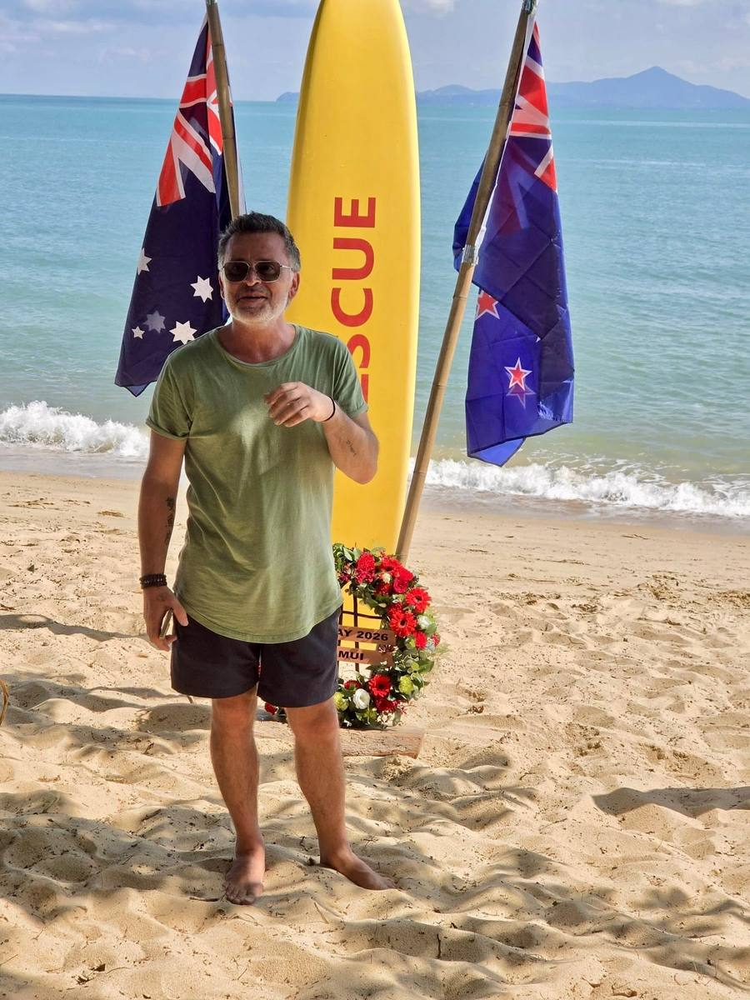
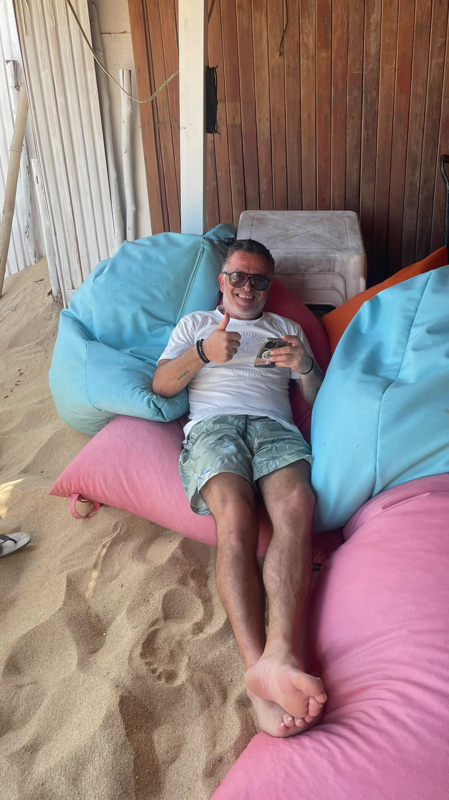

George
George in action with the Surf Club community.

George
George, an accountant from Melbourne, Australia, moved to Koh Samui shortly before the formation of the Koh Samui Surf Lifesaving Club and was one of the founding members present at the inaugural meeting.
From the very beginning, George has played a crucial role in helping the club get established. He generously donated the club's first batch of T-shirts, as well as stubby holders, helping create an early sense of identity and community around the club.
George's support has extended beyond the donations, with his enthusiasm and willingness to get behind the club playing an important part during those early stages.
George's ice cream shop in Maenam, Lick Samui, was our inaugural club sponsor.
We are incredibly grateful for his early support and ongoing contribution to the Koh Samui Surf Lifesaving Club.
